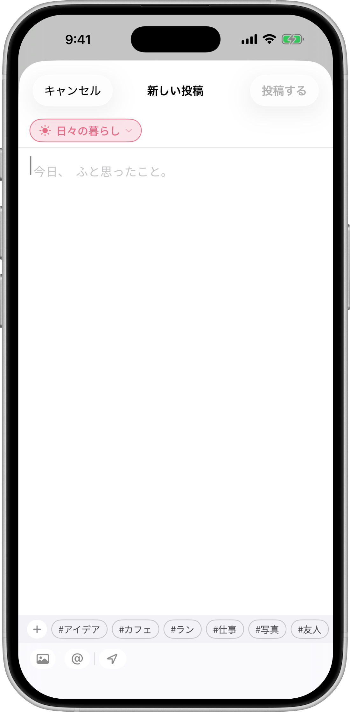
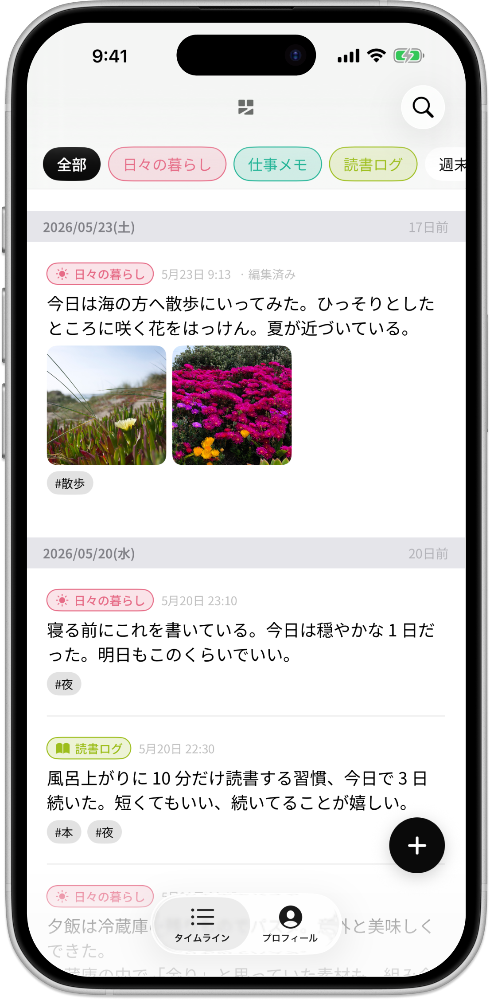
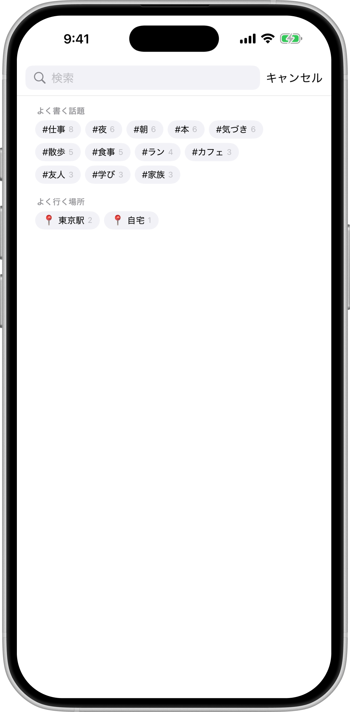
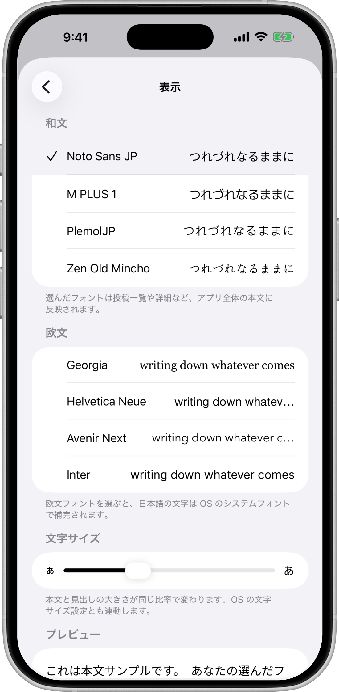
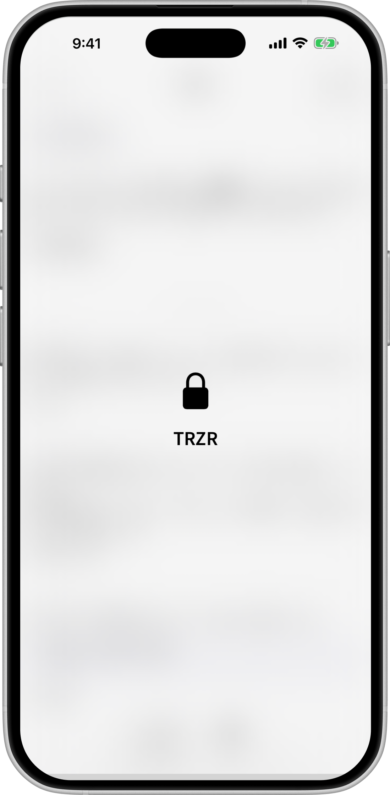

書くほど、
見返したくなる。
思いついた一行を、ためておく。テーマ・人・場所・天気とともに——あとで心地よく、さかのぼれる、自分だけの日記。
思いついた一行を、ためておく。テーマ・人・場所・天気とともに——あとで心地よく、さかのぼれる、自分だけの日記。
What TRZR is about
流れていくのは、過去のあなた自身の一行だけ。
数字で競わせる仕組みを、はじめから持たない。
投稿の中身はあなたの iCloud のみ。第三者に渡らない。
01 — 書く
右下の＋をタップして本文を打つだけ。タイトルも日付入力もいらない。投稿前にテーマを選び、よく使うタグはサジェストから一発で添付。写真やリンクも、その場で添えられます。

02 — 束ねる
「日々の暮らし」「仕事メモ」「読書ログ」——テーマで章を分け、上部のピルで瞬時に絞り込み。#タグはいくつでも付けられ、@で書いた名前は「人」として独立します。呼び方を変えれば、過去の投稿もまとめて更新。

03 — 掘る
キーワード検索とタグの AND 絞り込みを組み合わせて、目的の一行へ。「よく書く話題」「よく行く場所」から辿ることもできます。「あの考え、どこに書いたっけ」が、すぐ解決する。

04 — 整える
本文フォントは和文 4・欧文 4から選べて、文字サイズも自由に調整。テーマには和の色 8 種を添えて見分けやすく。自分の手に馴染む見た目に、仕立てられます。

The details
Seasons
投稿した日の天気と、五日ごとに移ろう七十二候(候)が、一行にそっと添います。
Places
マップから選んで「自宅」「行きつけのカフェ」と名付け、次回から再利用できます。
Links
URL を貼ると OGP のタイトルと画像をカードで表示。あの日読んだ記事も残せます。
Photos
1 投稿に複数枚を添付。iCloud 経由で、機種変更のあともすべて戻ります。
Lock
日記を Face ID で保護。アプリ切替時はすりガラスで本文を隠します。
Sync
あなたの iCloud だけに保存し、複数の iPhone で続きから。設定はいりません。
Privacy
投稿・写真・位置・タグ・テーマは、あなた自身の iCloud（CloudKit）にのみ保存されます。独自サーバーはなく、投稿の中身が第三者に渡ることはありません。利用状況は匿名・集計のみで、本文は一切送りません。
アプリ名の "TRZR（つれづれ）" は、吉田兼好『徒然草』から。 「つれづれなるまま、日ぐらし硯にむかひて……」 手が動くまま、心に浮かぶままに。

FAQ
はい。すべての機能を無料で使えます。
いいえ。TRZR に他人は登場しません。タイムラインに流れるのは自分の投稿だけで、共有やフォローの機能もありません。
あなた自身の iCloud（CloudKit）のみです。独自サーバーはなく、投稿の中身が第三者に渡ることはありません。利用状況は匿名・集計のみを記録します。
同じ Apple ID でサインインしていれば、iCloud 経由で自動的に同期します。特別な設定はいりません。
既定ではオフです。毎日のリマインダーを任意でオンにでき、時刻も選べます。連続日数で急かすような通知はしません。
不要です。お使いの iCloud を利用するだけで、メール登録やパスワード作成はありません。